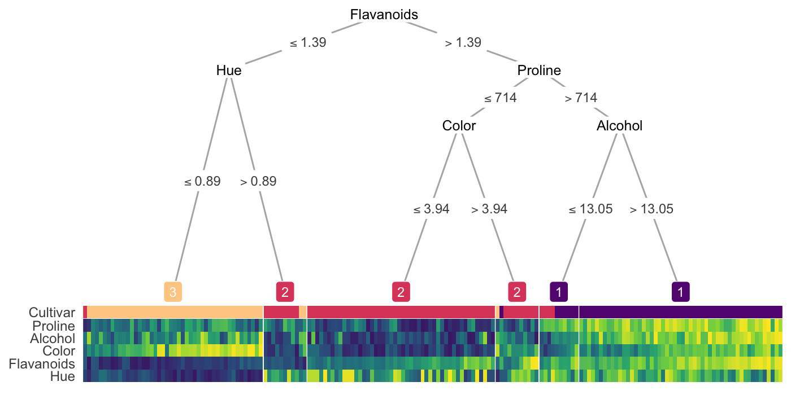

Your decision tree may be cool, but what if I tell you you can make it hot?
Changes in treeheatr 0.2.0
The first argument of heat_tree(), data is now replaced with x, which can be a dataframe (or tibble), a party (or constparty) object specifying the precomputed tree, or partynode object specifying the customized tree. custom_tree argument is no longer needed.
Install
Please make sure your version of R >= 3.5.0 before installation.
You can install the released version of treeheatr from CRAN with:
install.packages('treeheatr')Or the development version from GitHub with remotes:
# install.packages('remotes') # uncomment to install devtools
remotes::install_github('trangdata/treeheatr')Examples
Penguin dataset
These data were collected and made available by Dr. Kristen Gorman and the Palmer Station, Antarctica LTER.
Classification of different types of penguin species.

Wine recognition dataset
Classification of different cultivars of wine.
heat_tree(wine, target_lab = 'Type', target_lab_disp = 'Cultivar')
Citing treeheatr
If you use treeheatr in a scientific publication, please consider citing the following paper:
Le TT, Moore JH. treeheatr: an R package for interpretable decision tree visualizations. Bioinformatics. 2020 Jan 1.
BibTeX entry:
How to Use
treeheatr incorporates a heatmap at the terminal node of your decision tree. The basic building blocks to a treeheatr plot are (yes, you guessed it!) a decision tree and a heatmap.
The decision tree is computed with
partykit::ctree()and plotted with the well-documented and flexible ggparty package. The tree parameters can be passed to ggparty functions via theheat_tree()anddraw_tree()functions of treeheatr. More details on different ggparty geoms can be found here.The heatmap is shown with
ggplot2::geom_tile(). The user may choose to cluster the samples within each leaf node or the features across all samples.
Make sure to check out the vignette for detailed information on the usage of treeheatr.
Please open an issue for questions related to treeheatr usage, bug reports or general inquiries.
Thank you very much for your support!
Acknowledgements
Package hex was made with Midjourney and thus inherits a CC BY-NC 4.0 license.